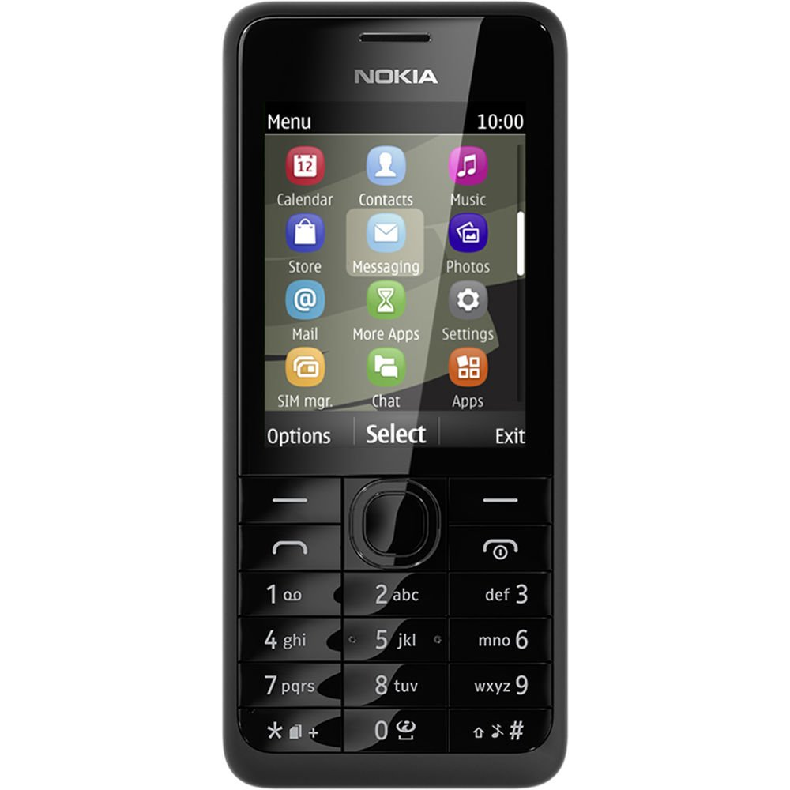
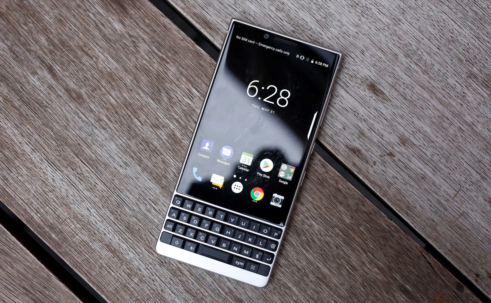

Nokia salva uma vida????
postado 31 de fevereiro 2024 Os celulares de antigamente da Nokia ficaram conhecidos na internet por serem quase indestrutíveis. Agora, apesar destes celulares estarem praticamente extintos e serem raros de encontrar, os que restaram ainda continuam salvando a vida de seus donos.O Nokia 301 foi lançado no começo de 2013. Ele foi por algum tempo um dos "feature phones" mais vendidos da Nokia e ficou conhecido por salvar a vida de uma pessoa no Afeganistão. Segundo os relatos, na semana passada um homem levou um tiro e foi salvo por seu celular, um Nokia 301. A bala ficou presa no aparelho e não chegou a atingir o dono, que não sofreu nenhum ferimento. Infelizmente não foram reveladas muitas informações, como o motivo desse homem ter levado um tiro ou o local do mesmo.
Leia maisUma lenda volta
postado 02 de junho 2024 Os celulares de teclado imbutido já foram bastante populares uma época, porém com a chegada dos celulares touch, sua fama acabou bem rápido, porém o BlackBerry em 2021, realizou a proeza de reviver esse conceito antigo, graças a uma parceria Onvward Mobility.
Leia mais